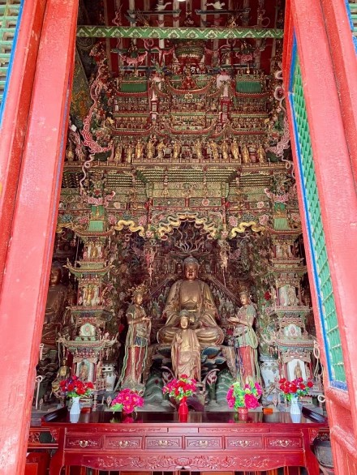

小西天 |
返回主页 |  | |
| 千佛庵又名小西天，位于山西省临汾市隰县城西一里许的凤凰山巅。明崇祯七年（1634年），由东明禅师创建，千佛庵是一座佛教禅宗寺院。因大雄宝殿内有佛千尊而得名，后因重门额题“道入西天”，又为区别城南另一座明代寺院“大西天”而更名小西天。千佛庵分上、下两院，建筑面积为1500平方米。上院有大雄宝殿、摩云阁、文殊、普贤两配殿；下院有无梁殿、韦陀殿、半云轩、钟鼓楼和两座掖门，一名“疑无路”，一名“别有天”。全庵建筑规模虽然不大，但殿宇三面环山，庵前临河，古木参天，清流涓涓，凤凰山崖璧如削，千佛庵危立山巅，借山布景，格局灵活，重楼叠阁。 1996年11月20日，千佛庵由国务院公布为第四批全国重点文物保护单位。同年经临汾市宗教部门批准为宗教活动场所。 |
|||